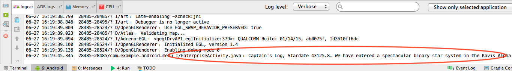
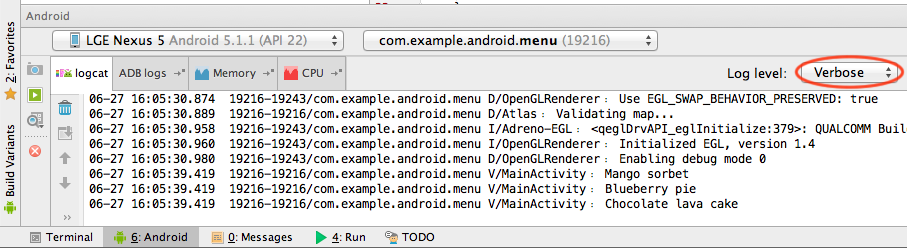
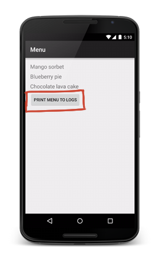

23. Quiz: Read Data from Views
Quiz: Read Data from Views
Question:
Read Data from Views
Getter and Setter Methods Review
You’ve been using methods such as setText and setImageResource. These are called setter methods because they are meant to modify or manipulate one value of a view (such as the text or image that it stores). Conventionally they start with the word "set".
There’s also a category of methods called getter methods, whose sole purpose is to "get" one value of a view, such as getting the current text of a view. Conventionally they start with the word "get". We’ll be using some getter methods in this next exercise.
Logs
Another skill you will need for this exercise is the ability write to the Android Logs. More information can be found here, but essentially you write a Java statement like this in your code:
Log.i("EnterpriseActivity.java", "Captain's Log, Stardate 43125.8. We have entered a spectacular binary star system in the Kavis Alpha sector on a most critical mission of astrophysical research.");
Then you run the app and look at the Android Log section of your screen. You’ll see some output that looks like this:

Note the first argument is the name of the class that the logging statement comes from. The second is the text you want to display.
We’ve used Log.i() here which stands for an "information" level log. You have these other options as well:
- e(String, String) (error)
- w(String, String) (warning)
- i(String, String) (information)
- d(String, String) (debug)
- v(String, String) (verbose)
They correlate to different log levels, which you can set when you’re running your app here:

When you set a log level, it will show anything from that log level and above, so the verbose log level displays the most information, while the error log level shows only the most critical logs.
Your Turn
This next quiz also requires creating a new app. Create a new app called Menu and copy over this code.
Note: If using Android Studio 1.4 or newer, be sure to configure your project using the Empty Activity template.
It should look like this when you load it up:

When you press the button Print menu to logs the XML code has already been set up to trigger a method called printToLogs. Add code to this method to read data from each of the menu item TextViews and to print the value of each menu item to the logs.
If you're feeling lost, don't fret—you can look at the quiz image on the next page for an example.
Start Quiz:
Solution:
Read Data from View Solution
The final printToLogs method should look something like this:
public void printToLogs(View view) {
// Find first menu item TextView and print the text to the logs
TextView textViewItem1 = (TextView) findViewById(R.id.menu_item_1);
String menuItem1 = textViewItem1.getText().toString();
Log.v("MainActivity", menuItem1);
// Find second menu item TextView and print the text to the logs
TextView textViewItem2 = (TextView) findViewById(R.id.menu_item_2);
String menuItem2 = textViewItem2.getText().toString();
Log.v("MainActivity", menuItem2);
// Find third menu item TextView and print the text to the logs
TextView textViewItem3 = (TextView) findViewById(R.id.menu_item_3);
String menuItem3 = textViewItem3.getText().toString();
Log.v("MainActivity", menuItem3);
}
You are doing the three steps three times:
- Get the TextView with findViewById.
- Use the getter called getText to get the text. Another method called toString must be used to convert the result (which is a CharSequence) returned from getText into a String. It’s complicated, we know. Sometimes you will need to massage the data you can get from a getter into the right type and the only way to know is by reading the documentation.
- Then use the method
Log.vto print the log. You could have used any of the Logging methods to print the log, we chose verbose.
The final solution is here.